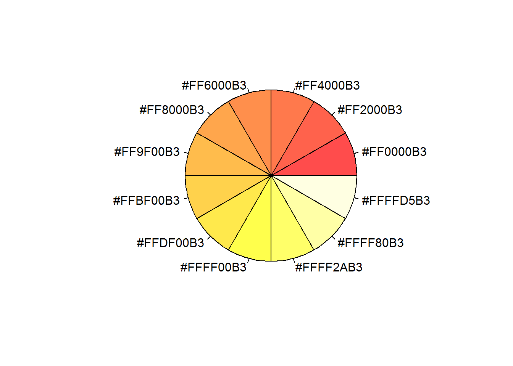

Programs - R
R Initial
- To display R code chunks with code and output use:
{r} x=2 - To display R code output without code use
{r,echo=F} x=2 - To display R code without output use
{r,eval=F} x=2
rm(list=ls()) # Clear variables
if(!require(tables)){install.packages("tables")};library(tables) # Load packagesR Directories and File Manipulation
wd0 <- getwd() # Get current dirctory
dirname(wd0) # Gives parent directory of the current one
dir.create("x") # creates directory x in working dir
dir.create(paste(getwd(),"/x/y",sep="")) # creates directory y within x
file.create(paste(getwd(),"/x/y/example.txt",sep="")) # create a text file
file.remove(paste(getwd(),"/x/y/example.txt",sep="")) # remove a file
unlink("x",recursive=T) # delete entire foldersR reshape
if(!require(reshape2)){install.packages("reshape2")};library(reshape2) # Load packages## Loading required package: reshape2# Create Dummy Data
df<-data.frame(names=c("Z","A","X"),freq=c(10,12,2),color=c("blue","red","red"));print(df)## names freq color
## 1 Z 10 blue
## 2 A 12 red
## 3 X 2 red# Go from Long to Wide format using dcast
#dcast(data,row1+row2~col1+col2,value.var="value", fun.aggregate=functions (e.g. sum or mean))
df_wide<-dcast(df,names~color,value.var="freq",fun.aggregate=sum,na.rm=T);print(df_wide)## names blue red
## 1 A 0 12
## 2 X 0 2
## 3 Z 10 0#Go from Wide to Long using melt can ignore measure.vars if want all of them to collapse
#dt3<-melt(dt2, id.vars=c("year","month"), measure.vars=c(""), value.name="",variable.name="Level_m")
df_long<-melt(df_wide, id.vars=c("names"), value.name="freq",variable.name="color");print(df_long)## names color freq
## 1 A blue 0
## 2 X blue 0
## 3 Z blue 10
## 4 A red 12
## 5 X red 2
## 6 Z red 0# Aggregate long data to summarize
df_agg<-aggregate(freq~names, data=df_long, sum, na.rm=TRUE); print(df_agg)## names freq
## 1 A 12
## 2 X 2
## 3 Z 10R Colors
https://www.nceas.ucsb.edu/~frazier/RSpatialGuides/colorPaletteCheatsheet.pdf
http://www.stat.columbia.edu/~tzheng/files/Rcolor.pdf
# Load Packages
if(!require(graphics)){install.packages("graphics")};library(graphics)
if(!require(graphics)){install.packages("graphics")};library(graphics)
# View a single color quickly
x<-adjustcolor("red", alpha.f = 0.2)
pie(rep(1,12),label=x,col=x)# R colors
myPalette1<- rainbow(n=12,alpha=0.9)
myPalette2<- heat.colors(n=12,alpha=0.7)
myPalette3<- terrain.colors(n=12,alpha=1)
myPalette4<- topo.colors(n=12,alpha=0.5)
myPalette5<- cm.colors(n=12,alpha=0.6)
# Custom
myPalette6<- c("red","#fdd67b")
myPalette7<- colorRampPalette(c("blue", "yellow","red"))(8)
pie(rep(1,length(myPalette1)),labels=myPalette1,col=myPalette1); print(myPalette1)
## [1] "#FF0000E6" "#FF8000E6" "#FFFF00E6" "#80FF00E6" "#00FF00E6"
## [6] "#00FF80E6" "#00FFFFE6" "#0080FFE6" "#0000FFE6" "#8000FFE6"
## [11] "#FF00FFE6" "#FF0080E6"pie(rep(1,length(myPalette2)),labels=myPalette2,col=myPalette2); print(myPalette2)
## [1] "#FF0000B3" "#FF2000B3" "#FF4000B3" "#FF6000B3" "#FF8000B3"
## [6] "#FF9F00B3" "#FFBF00B3" "#FFDF00B3" "#FFFF00B3" "#FFFF2AB3"
## [11] "#FFFF80B3" "#FFFFD5B3"pie(rep(1,length(myPalette3)),labels=myPalette3,col=myPalette3); print(myPalette3)
## [1] "#00A600FF" "#24B300FF" "#4CBF00FF" "#7ACC00FF" "#ADD900FF"
## [6] "#E6E600FF" "#E8C727FF" "#EAB64EFF" "#ECB176FF" "#EEB99FFF"
## [11] "#F0CFC8FF" "#F2F2F2FF"pie(rep(1,length(myPalette4)),labels=myPalette4,col=myPalette4); print(myPalette4)
## [1] "#4C00FF80" "#0019FF80" "#0080FF80" "#00E5FF80" "#00FF4D80"
## [6] "#1AFF0080" "#80FF0080" "#E6FF0080" "#FFFF0080" "#FFE53B80"
## [11] "#FFDB7780" "#FFE0B380"pie(rep(1,length(myPalette5)),labels=myPalette5,col=myPalette5); print(myPalette5)
## [1] "#80FFFF99" "#95FFFF99" "#AAFFFF99" "#BFFFFF99" "#D5FFFF99"
## [6] "#EAFFFF99" "#FFEAFF99" "#FFD5FF99" "#FFBFFF99" "#FFAAFF99"
## [11] "#FF95FF99" "#FF80FF99"pie(rep(1,length(myPalette6)),labels=myPalette6,col=myPalette6); print(myPalette6)
## [1] "red" "#fdd67b"pie(rep(1,length(myPalette7)),labels=myPalette7,col=myPalette7); print(myPalette7)
## [1] "#0000FF" "#4848B6" "#91916D" "#DADA24" "#FFDA00" "#FF9100" "#FF4800"
## [8] "#FF0000"